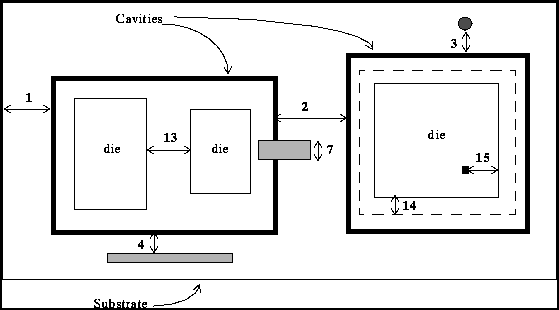
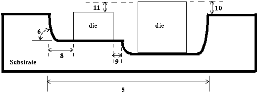

The following categories of technology rules are candidates for inclusion in EDIF:
Design for Manufacturing (DFM) Rules
Design for Assembly (DFA) Rules
Design for Testability (DFT) Rules
Design for Function (DFF) Rules
Algorithm Control Parameters
The Algorithm Control Parameters are specific to each CAD system, and thus should not be representable within a standard data exchange mechanism which may potentially apply to any CAD system. The DFM, DFT, DFA and DFF rules should be representable in EDIF. Currently, the EDIF PCB/MCM technology rule model covers a subset of manufacture and assembly rules only.
The model of technology rules can be found in the pcb_technology_model schema. A bare_board_technology (see chapter 15) may define a collection of technology_rules which specify the physical constraints and the clearance constraints for that technology. A technology_rule may apply to the whole board, or to a number of layers on a board, or to a particular region on a layer. Figure 25.1 shows an example of a technology rule. For the whole board, it has defined a default minimum hole size of 5 mils, a default minimum trace to trace spacing of 6 mils and a default minimum trace to board edge spacing of 8 mils. On layer TOP, the default trace to trace spacing is overridden and its value becomes 4 mils. Similarly, on a particular region of layer TOP, the trace to trace spacing is overridden again and its value becomes 3 mils.
Figure 25.2 shows the model of a technology_rule. It is either an external_technology_rule or an internal_technology_rule. An internal_technology_rule is further classified into an internal_bare_board_technology_rule which defines manufacture or clearance constraints for the whole board, or an internal_physical_layer_technology_rule which defines manufacture or clearance constraints for a number of layers on a board. A layer-specific technology rule applies to the whole layer (i.e. internal_bare_board_layer_technology_rule) or to a chosen region on a layer (i.e. internal_bare_board_region_technology_rule).
The minimum angle that must be formed by a trace when it enters a pad in order to avoid the formation of an acid trap (a place where acid can be trapped during the bare board manufacturing process). Potential acid traps are considered to occur only on the inside of trace corners, and where a trace meets a pad. If a trace has two adjacent segments which join at a common vertex, the smaller of the two angles formed by the segments is measured. If this angle is smaller than the acid trap angle, then a potential acid trap is formed at the common vertex. When a trace segment enters a pad, there will be two angles formed between the trace segment and the outline of the pad. If either of these angles is smaller than the acid trap angle, then acid may be trapped. Figure 25.3 shows how entry angles are measured between different types of artifacts. A minimum acid trap angle may be specified for the whole board, for various layers of a board, or for a region on several layers.
The minimum width of sliver that can be successfully manufactured on a bare board. A sliver is a thin shard of material which is too thin to be self-sustaining. The rule may be specified for the whole board, for various layers of a board, or for a region on several layers.
The trace grid is a recommendation to put traces on the grid. It may be specified for the whole board, for various layers of a board, or for a region on several layers.
Constraints on hole size are checked against the diameter of the measured hole and they apply to the whole board. Different hole size rules may be specified for different kind of holes as listed below.
holes inside vias
holes inside pin places
The hole_clearance_rule is used to ensure that two holes are not so close together that they will compromise the structural strength of the board. Hole clearance rules apply to the whole board. The distance is measured between the closest points of two holes. Holes may be manufactured by drilling or other processes. Clearances between drilled holes are defined by specifying the minimum spacing between different drill rules. Hence, different clearance values can be stated between:
holes which conform to a drill_rule and holes which conform to another drill_rule
holes which conform to a drill_rule and any other holes
any holes
The maximum expected inaccuracy between the required position of a drilled hole and the actual position. It is often used as the source of the check that the drilled hole lies wholly within a surrounding pad. Drilling tolerance is specified for the whole board.
The via allowed flag indicates whether or not vias can be used in the design and it applies to the whole board. This flag is necessary as a particular manufacturing technique may not allow the production of vias for cross-layer connection.
The via_grid is a recommendation to put vias on the grid and it applies to the whole board. It checks vias with holes which are manufactured by the same drill_rule only.
A routing strategy specifies the preferred routing direction on various layers of the bare board. It may apply to several layers on a board, or to a specific region on a number of layers.
The keep-in area is a recommendation that certain types of layout features (e.g. trace, via, hole, non_specific_layout_shape) should be located within a given region of the board.
The keep-out area is a recommendation that certain types of layout features (e.g. trace, via, hole, non_specific_layout_shape) should NOT be located within a given region of the board, for example, a trace keep-out area.
Clearance rules are defined in internal_technology_rule and they may be specified for the whole board, for various layers of a board, or for a region on several layers. There are a number of clearance rules which specify the minimum and the optimum spacings between artifacts of particular types. For clearance rules, a board edge means an edge of a bare board, a surface_mount_pad means a pad on a surface-mounted pin place, a through_hole_pad means a pad on a through-hole-mounted pin place, a via_pad means a pad on a via and a trace means a trace segment. The optimum spacing is what the designer or manufacturer prefers but it can be violated provided the minimum spacing is followed. Optimum spacings are specific to the auto-routing process therefore only trace to layout shape, trace to surface_mount_pad, trace to through_hole_pad, trace to trace or trace to via_pad can have optimum spacings. Table 25.1 defines what clearance rules are defined between pairs of artifacts. M represents minimum spacing and O represents optimum spacing.
Table 25.1: Spacing rules between pairs of artifacts
| trace | surface_mount_pad | through_hole_pad | via_pad | layout shape | board edge | |
| trace | M, O | M, O | M, O | M, O | M, O | M |
| surface_mount_pad | M | M | M | M | M | |
| through_hole_pad | M | M | M | M | ||
| via_pad | M | M | M | |||
| layout shape | M | M | ||||
| hole | M |
Clearance rules are usually applied to objects from different physical nets on a bare board. The check_on_same_net flag indicates whether or not clearance rules should be applied to objects from the same component signal. An example might be a zig-zag trace in which the minimum trace-to-trace spacing is preserved between adjacent edges of different segments of the same trace.
For trace to via_pad clearance, the rule is applied by determining the distance between an edge of a pad on a via and an edge of a trace segment nearest to that via on the same layer. For minimum distance, the clearance must be measured perpendicular to the trace segment, as shown in figure 25.4.
For via_pad to via_pad clearance, the rule is applied by determining the distance between an edge of a pad on a via and an edge of a pad on another via on the same layer, as shown in figure 25.5.
For hole to board edge, trace to board edge, surface_mount_pad to board edge, through_hole_pad to board edge, via_pad to board edge and layout shape to board edge, the clearance rules specify how far inside the inner edge of the board objects must be located. The purpose is to assure that the profiling tool (which cuts out a board from a sheet) does not damage the electrical artifacts within the board.
A packaged or die component is mounted onto a bare board by specifying a mountable_package (see chapter 17) or a mountable_die_physical_template (see section 18.4) for the component. Assembly rules are specified in an assembled_board and check against how components are mounted on the board.
The rule is used to specify areas on an assembled board that components are intended to be kept in or out of.
The rule is used to specify the exclusion of certain types of layout items, e.g. vias, from parts of the bare board. The exclusion areas are typically due to the presence of one or more components.
PCB assembly processes and tools need to know how to place components onto the bare board. Most of that information can be found in the mountable_package or mountable_die_physical_template. A mountable_package_orientation_rule further defines assembly information by specifying the allowable angles of rotation for a mountable_package. The rotation angle is measured counter-clockwise as seen from the top side of an assembled_board.
A default maximum component height may be specified for the top side or the bottom side of an assembled_board. For example, this rule can be used to ensure that components on the bottom side do not obstruct the operation of a bed-of-nails testing fixture. Another usage is to ensure that the finished assembled board can be put into a card cage.
The rule is used to state the physical or clearance constraints for the physical nets on an assembled board which realize signals of the design. It includes:
The default minimum and optimum trace width for signals. It is possible to override the default trace width on individual layer(s).
The minimum spur length is the smallest length of the trace that must be laid when routing from the main track of a signal to a load pin.
The clearance constraints for signals, e.g. minimum trace to trace spacing.
For chips-first technology (see section 18.1), a bare board has cavities on one or more substrate layers. Each cavity consists of wells which may have different depths. Dies can be placed inside wells. Dies with different heights are placed inside adjacent wells of different depth. Various technology rules are listed below and are shown in figure 25.6.
Cavity to board edge - minimum and recommended spacing between edges of a cavity and of the substrate.
Cavity to cavity - minimum and recommended spacing between edges of adjacent cavities in the substrate.
Hole to cavity - minimum and recommended spacing between a hole drilled in the substrate and a cavity edge.
Metal artifact to cavity - minimum and recommended spacing between a metal artifact on the substrate and a cavity edge. This constraint applies only to metal artifacts on the substrate surface. These artifacts do not enter into cavities.
Dimension of a cavity - minimum size of a cavity.
Angle of well wall - maximum, minimum and recommended angle of the well wall.
Width of trace into cavity - minimum and recommended width of the metal artifact entering into cavity.
Embedded die to well edge - maximum, minimum and recommended spacing between an embedded die and an edge of the well that it is mounted into.
Embedded die to well wall - maximum, minimum and recommended spacing between an embedded die and the wall of an adjacent well.
Height difference between an embedded die and the substrate surface - maximum and recommended height difference between the surface of a die and the surface of the substrate.
Height difference between adjacent embedded dies placed in the same cavity. - maximum and minimum height difference between adjacent dies which are embedded in the same cavity.
Embedded die to embedded die (of dies with same height) - maximum, minimum and recommended spacing between dies of same height embedded in the same well.
Embedded die to embedded die (of dies with different height) - maximum, minimum and recommended spacing between dies with different height embedded in adjacent wells of different depth.
Width of position tolerance around each embedded die - minimum width of the die_position_tolerance of a die. The chips-first interconnect is laid directly over the top of the dies after the dies are attached. If the dies are attached slightly off in X or Y directions or rotationally, the position tolerance allows the first layer of interconnect to be tweaked so that the slightly out of place die can be connected to the above interconnect as defined by the artwork masks.
Die bond pad to die edge - minimum and recommended spacing between edges of a bond pad and of the die containing the bond pad.


For chips-last technology (see section 18.1), wirebonds can be used to effect a connection between a pre-determined location on a bare die to a nominated location on the board (i.e. wirebond pad). They are usually made of gold or aluminum.
Wirebond length - minimum and maximum length of a wirebond.